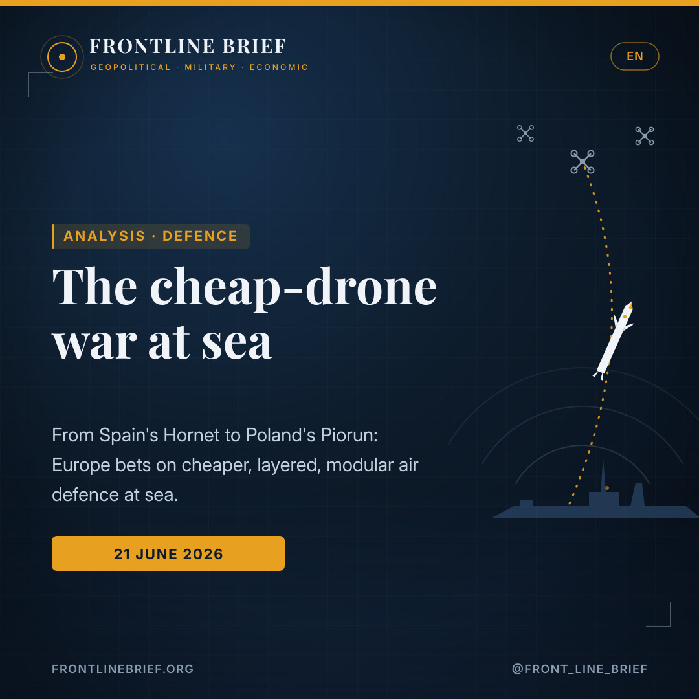
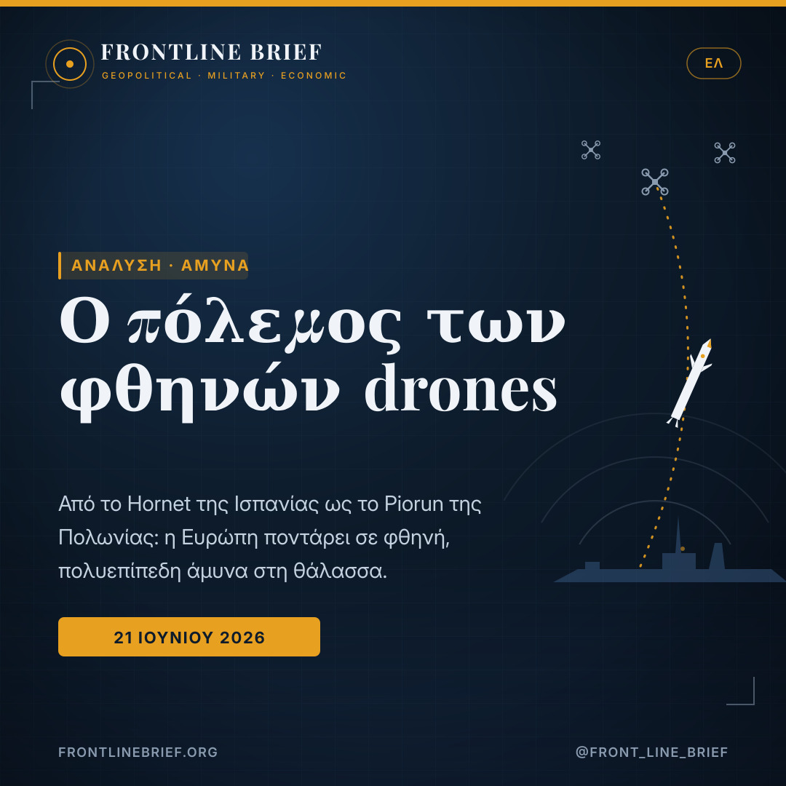
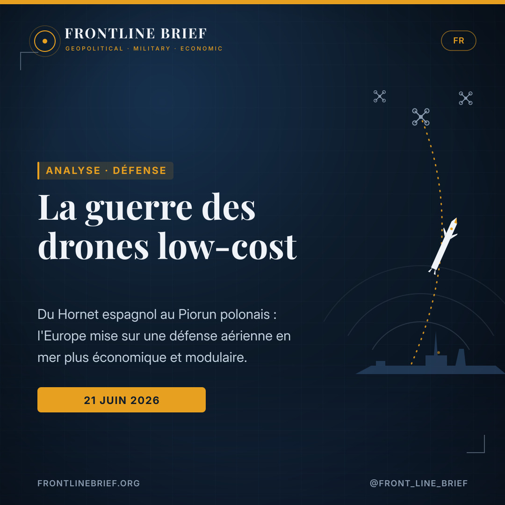
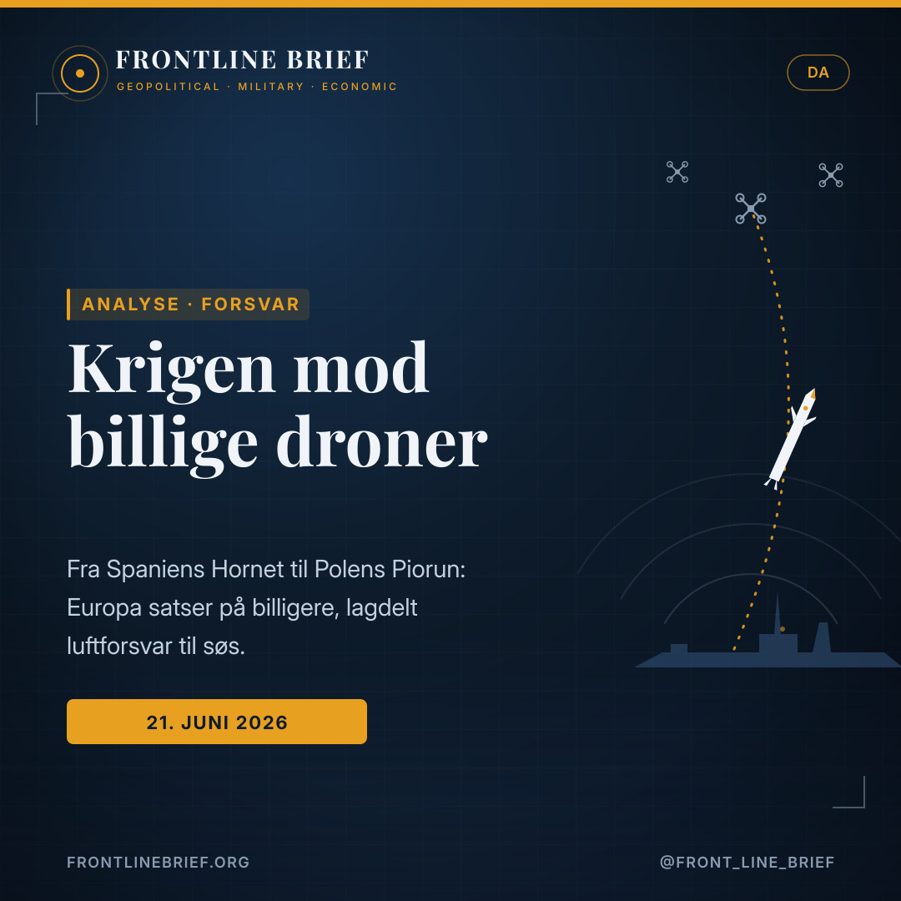
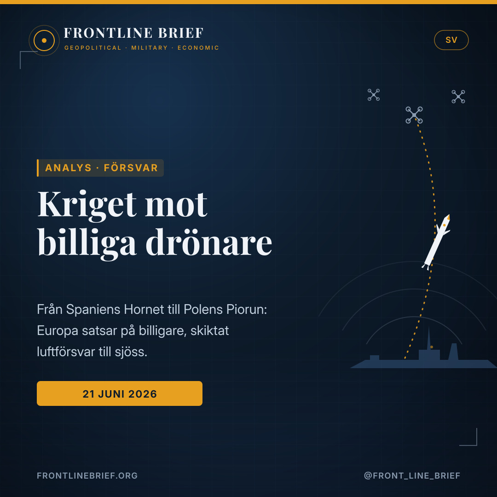

The cheap-drone problem goes to sea: how Europe is scrambling for affordable naval air defence
In one week of June 2026, two announcements — Spain firing the Destinus Hornet from a frigate, and Naval Group agreeing to put Poland's Piorun on its Rampart launcher — told the same story. Europe's navies are no longer trying to beat the drone swarm with the most expensive missile. They are trying to beat it on price.





Price, not just firepower
A premium interceptor can exceed €1M; the drone it stops may cost around €35k. Firing high-value rounds at cheap aircraft is a losing exchange — the goal now is to thin a swarm by volume and price.
Modular and bolt-on
Containerised interceptors and modular launchers that mix rockets, loitering munitions and short-range missiles let a warship field the right effector for each target, without new vertical launch cells.
An industrial realignment
Destinus and Rheinmetall; Naval Group, MESKO and TELESYSTEM. The new air defence is also a story of European industrial tie-ups and cross-border supply.
The threat that changed the maths
The cheap, mass-produced drone has rewritten the economics of air defence. A small UAV or loitering munition can be bought for a few tens of thousands of euros, while the missiles traditionally used to shoot them down can cost a thousand times more. A navy that answers every drone with a premium interceptor wins the engagement and loses the war of attrition, emptying expensive magazines against an enemy that can replace its losses for pocket change.
Two signals in one week
Within days of each other in June 2026, two European developments pointed the same way. Spain test-fired the Destinus Hornet Block 1 from the frigate Santa María — a containerised interceptor bolted onto an ageing hull, with no vertical launch cells required. Almost simultaneously, Naval Group, MESKO and TELESYSTEM signed an agreement to fire Poland's Piorun missile from Naval Group's modular Rampart launcher. Different countries, different industries, the same instinct: meet the low-end threat with something cheaper and more flexible than a high-end missile.
The shift is not from one missile to another. It is from buying the best interceptor to buying the right mix — and being able to afford the next salvo.
The common thread: modular and cheap
What links the two is architecture, not just hardware. The Hornet is containerised, so it can be added to almost any deck. Rampart is modular, carrying interchangeable packages of 68/70 mm rockets, short-range missiles and loitering munitions, so a captain can match the effector to the target. Both designs accept that no single weapon answers every threat, and both prize the ability to reload and adapt over the prestige of a flagship missile. The result is a layered approach: cheap effects for cheap threats, premium rounds held back for the targets that justify them.
An industrial story, too
The trend is as much about factories as physics. In April 2026 Destinus and Rheinmetall agreed a joint venture to industrialise the Hornet; the Piorun project binds a French prime to a Polish missile house. Europe is not only changing how it shoots down drones — it is rewiring who builds the interceptors, deepening cross-border supply chains and spreading the industrial base beyond the traditional primes. For governments worried about both cost and sovereignty, a cheaper, locally producible effector is doubly attractive.
Why it matters for the Eastern Mediterranean
For navies in contested, cluttered seas — the Aegean and the Eastern Mediterranean among them — the calculus is sharper still. These are waters where small drones, fast craft and loitering munitions can be launched cheaply and in numbers, and where a single warship may face a saturating attack rather than a lone missile. Affordable, layered defence is not a luxury here; it is what keeps a fleet in the fight after the first day. The same logic that pushed Madrid and Warsaw will press on Athens and its neighbours.
The limits
None of this is settled. A demonstration is not a deployment, and integrating a missile onto a launcher or proving an interceptor at sea is the start of a long road, not its end. Magazine depth, sensors and electronic warfare still decide who wins a swarm fight, and a cheaper round that misses is no bargain. The promise of these systems will be tested not on a calm range but against a real, adaptive raid.
Bottom line
Still, the direction is clear. Europe's navies are converging on a doctrine of affordable, modular, layered air defence at sea — and the advantage will go to the states that can industrialise it fastest. The cheap-drone problem went to sea some time ago. In June 2026, Europe finally started answering it on the drone's own terms.
Η απειλή που άλλαξε τα μαθηματικά
Το φθηνό, μαζικά παραγόμενο drone ξαναέγραψε την οικονομία της αντιαεροπορικής άμυνας. Ένα μικρό UAV ή μια loitering munition κοστίζει μερικές δεκάδες χιλιάδες ευρώ, ενώ οι πύραυλοι που παραδοσιακά χρησιμοποιούνται για να τα καταρρίψουν κοστίζουν χίλιες φορές περισσότερο. Ένα ναυτικό που απαντά σε κάθε drone με ακριβό αναχαιτιστή κερδίζει τη μάχη αλλά χάνει τον πόλεμο φθοράς, αδειάζοντας ακριβά βλήματα απέναντι σε έναν εχθρό που αναπληρώνει τις απώλειές του με ψίχουλα.
Δύο μηνύματα σε μία εβδομάδα
Μέσα σε λίγες ημέρες τον Ιούνιο του 2026, δύο ευρωπαϊκές εξελίξεις έδειξαν προς την ίδια κατεύθυνση. Η Ισπανία δοκίμασε τον Destinus Hornet Block 1 από τη φρεγάτα Santa María — έναν αναχαιτιστή σε κοντέινερ, προσαρτημένο σε παλαιό σκάφος, χωρίς κάθετα φρεάτια εκτόξευσης. Σχεδόν ταυτόχρονα, Naval Group, MESKO και TELESYSTEM υπέγραψαν συμφωνία για την εκτόξευση του πολωνικού Piorun από τον αρθρωτό εκτοξευτή Rampart. Διαφορετικές χώρες, διαφορετικές βιομηχανίες, το ίδιο ένστικτο: να αντιμετωπιστεί η χαμηλού κόστους απειλή με κάτι φθηνότερο και πιο ευέλικτο.
Η μετατόπιση δεν είναι από τον έναν πύραυλο στον άλλον. Είναι από το να αγοράζεις τον καλύτερο αναχαιτιστή στο να αγοράζεις το σωστό μείγμα — και να μπορείς να πληρώσεις την επόμενη βολή.
Ο κοινός παρονομαστής: αρθρωτό και φθηνό
Αυτό που συνδέει τα δύο είναι η αρχιτεκτονική, όχι μόνο το υλικό. Ο Hornet είναι σε κοντέινερ, οπότε προστίθεται σχεδόν σε κάθε κατάστρωμα. Το Rampart είναι αρθρωτό, με εναλλάξιμες δέσμες ρουκετών 68/70 χλστ., πυραύλων μικρού βεληνεκούς και loitering munitions, ώστε ο κυβερνήτης να ταιριάζει τον φορέα στον στόχο. Και τα δύο δέχονται ότι κανένα όπλο δεν απαντά σε κάθε απειλή, και εκτιμούν την ικανότητα επαναφόρτισης και προσαρμογής πάνω από το γόητρο ενός κορυφαίου πυραύλου. Το αποτέλεσμα είναι μια πολυεπίπεδη προσέγγιση: φθηνά μέσα για φθηνές απειλές, ακριβά βλήματα για τους στόχους που το δικαιολογούν.
Και μια βιομηχανική ιστορία
Η τάση αφορά τόσο τα εργοστάσια όσο και τη φυσική. Τον Απρίλιο του 2026 Destinus και Rheinmetall συμφώνησαν κοινοπραξία για τη βιομηχανοποίηση του Hornet· το πρόγραμμα Piorun δένει έναν Γάλλο κατασκευαστή με μια πολωνική εταιρεία πυραύλων. Η Ευρώπη δεν αλλάζει μόνο τον τρόπο που καταρρίπτει drones — ανασχηματίζει το ποιος φτιάχνει τους αναχαιτιστές, βαθαίνοντας τις διασυνοριακές αλυσίδες εφοδιασμού. Για κυβερνήσεις που ανησυχούν και για το κόστος και για την αυτονομία, ένας φθηνότερος, εγχωρίως παραγώγιμος φορέας είναι διπλά ελκυστικός.
Γιατί μετράει για την Ανατολική Μεσόγειο
Για τα ναυτικά σε αμφισβητούμενες, πυκνές θάλασσες — όπως το Αιγαίο και η Ανατολική Μεσόγειος — ο υπολογισμός είναι ακόμη πιο κρίσιμος. Εδώ μικρά drones, ταχέα σκάφη και loitering munitions εκτοξεύονται φθηνά και μαζικά, και ένα μόνο πλοίο μπορεί να αντιμετωπίσει κορεσμένη επίθεση αντί για έναν μεμονωμένο πύραυλο. Η οικονομικά προσιτή, πολυεπίπεδη άμυνα δεν είναι πολυτέλεια εδώ· είναι αυτό που κρατά έναν στόλο στη μάχη μετά την πρώτη μέρα. Η ίδια λογική που ώθησε Μαδρίτη και Βαρσοβία θα πιέσει και την Αθήνα.
Τα όρια
Τίποτα από αυτά δεν είναι δεδομένο. Μια επίδειξη δεν είναι επιχειρησιακή ένταξη, και η ενσωμάτωση ενός πυραύλου σε έναν εκτοξευτή ή η δοκιμή ενός αναχαιτιστή εν πλω είναι η αρχή ενός μακρού δρόμου, όχι το τέλος του. Το βάθος των γεμιστήρων, οι αισθητήρες και ο ηλεκτρονικός πόλεμος εξακολουθούν να κρίνουν ποιος κερδίζει μια μάχη σμήνους, και ένα φθηνότερο βλήμα που αστοχεί δεν είναι ευκαιρία. Η αξία αυτών των συστημάτων θα κριθεί απέναντι σε μια πραγματική, προσαρμοζόμενη επιδρομή.
Συμπέρασμα
Παρ' όλα αυτά, η κατεύθυνση είναι σαφής. Τα ναυτικά της Ευρώπης συγκλίνουν σε ένα δόγμα οικονομικής, αρθρωτής, πολυεπίπεδης άμυνας στη θάλασσα — και το πλεονέκτημα θα το έχουν όσα κράτη μπορούν να το βιομηχανοποιήσουν πιο γρήγορα. Το πρόβλημα των φθηνών drones βγήκε στη θάλασσα εδώ και καιρό. Τον Ιούνιο του 2026, η Ευρώπη άρχισε επιτέλους να του απαντά με τους δικούς του όρους.
La menace qui a changé l'équation
Le drone bon marché, produit en masse, a réécrit l'économie de la défense aérienne. Un petit drone ou une munition rôdeuse coûte quelques dizaines de milliers d'euros, quand les missiles habituellement employés pour les abattre coûtent mille fois plus. Une marine qui répond à chaque drone par un intercepteur de haut de gamme gagne l'engagement mais perd la guerre d'usure, en vidant des soutes coûteuses face à un ennemi qui remplace ses pertes pour presque rien.
Deux signaux en une semaine
À quelques jours d'intervalle en juin 2026, deux développements européens ont pointé dans la même direction. L'Espagne a tiré le Destinus Hornet Block 1 depuis la frégate Santa María — un intercepteur conteneurisé greffé sur une coque ancienne, sans puits de lancement vertical. Presque simultanément, Naval Group, MESKO et TELESYSTEM ont signé pour tirer le missile polonais Piorun depuis le lanceur modulaire Rampart. Des pays différents, des industries différentes, le même réflexe : contrer la menace bas de gamme avec quelque chose de moins cher et de plus souple.
Le basculement ne va pas d'un missile à un autre. Il va de l'achat du meilleur intercepteur à l'achat du bon mélange — et de la capacité à payer la salve suivante.
Le fil commun : modulaire et bon marché
Ce qui relie les deux, c'est l'architecture, pas seulement le matériel. Le Hornet est conteneurisé, donc adaptable à presque tout pont. Le Rampart est modulaire, emportant des paquets interchangeables de roquettes de 68/70 mm, de missiles courte portée et de munitions rôdeuses, pour que le commandant ajuste l'effecteur à la cible. Les deux admettent qu'aucune arme unique ne répond à toutes les menaces et privilégient la capacité à recharger et à s'adapter sur le prestige d'un missile vedette. D'où une approche en couches : des effets bon marché pour les menaces bon marché, des munitions onéreuses réservées aux cibles qui le justifient.
Une histoire industrielle aussi
La tendance tient autant aux usines qu'à la physique. En avril 2026, Destinus et Rheinmetall ont conclu une coentreprise pour industrialiser le Hornet ; le projet Piorun lie un maître d'œuvre français à un missilier polonais. L'Europe ne change pas seulement sa manière d'abattre les drones — elle redessine qui construit les intercepteurs, approfondissant les chaînes d'approvisionnement transfrontalières. Pour des gouvernements soucieux du coût et de la souveraineté, un effecteur moins cher et produit localement est doublement attrayant.
Pourquoi cela compte pour la Méditerranée orientale
Pour les marines opérant dans des mers disputées et encombrées — l'Égée et la Méditerranée orientale en font partie — le calcul est encore plus aigu. Ce sont des eaux où petits drones, embarcations rapides et munitions rôdeuses se lancent à bas coût et en nombre, et où un seul navire peut affronter une attaque saturante plutôt qu'un missile isolé. Une défense abordable et en couches n'y est pas un luxe ; c'est ce qui maintient une flotte au combat après le premier jour. La logique qui a poussé Madrid et Varsovie pèsera aussi sur Athènes.
Les limites
Rien de tout cela n'est acquis. Une démonstration n'est pas une mise en service, et intégrer un missile à un lanceur ou éprouver un intercepteur en mer est le début d'un long chemin, pas sa fin. La profondeur des soutes, les capteurs et la guerre électronique décident encore qui l'emporte dans un combat de saturation, et une munition moins chère qui manque sa cible n'est pas une bonne affaire. La promesse de ces systèmes se vérifiera face à un raid réel et adaptatif.
En conclusion
La direction, pourtant, est claire. Les marines européennes convergent vers une doctrine de défense aérienne abordable, modulaire et en couches en mer — et l'avantage ira aux États qui sauront l'industrialiser le plus vite. Le problème du drone bon marché a pris la mer il y a déjà quelque temps. En juin 2026, l'Europe a enfin commencé à y répondre sur le terrain du drone.
Truslen, der ændrede regnestykket
Den billige, masseproducerede drone har skrevet luftforsvarets økonomi om. En lille drone eller en loitering munition kan købes for nogle få titusinder af euro, mens de missiler, der traditionelt bruges til at skyde dem ned, koster tusind gange mere. En flåde, der svarer på hver drone med en dyr interceptor, vinder kampen, men taber udmattelseskrigen og tømmer dyre magasiner mod en fjende, der erstatter sine tab for småpenge.
To signaler på én uge
Med få dages mellemrum i juni 2026 pegede to europæiske udviklinger samme vej. Spanien affyrede Destinus Hornet Block 1 fra fregatten Santa María — en containerbaseret interceptor monteret på et ældre skrog, uden lodrette affyringsceller. Næsten samtidig underskrev Naval Group, MESKO og TELESYSTEM en aftale om at affyre det polske Piorun-missil fra den modulære Rampart-affyringsenhed. Forskellige lande, forskellige industrier, samme instinkt: at møde lavpristruslen med noget billigere og mere fleksibelt.
Skiftet går ikke fra ét missil til et andet. Det går fra at købe den bedste interceptor til at købe den rette blanding — og at have råd til næste salve.
Den fælles tråd: modulær og billig
Det, der forbinder de to, er arkitektur, ikke kun isenkram. Hornet er containerbaseret og kan derfor sættes på næsten ethvert dæk. Rampart er modulær og bærer udskiftelige pakker af 68/70 mm raketter, kortrækkende missiler og loitering munitions, så chefen kan matche effektoren til målet. Begge accepterer, at intet enkelt våben svarer på alle trusler, og begge værdsætter evnen til at lade om og tilpasse sig frem for et prestigemissils glans. Resultatet er en lagdelt tilgang: billige effekter mod billige trusler, dyre missiler holdt tilbage til de mål, der retfærdiggør dem.
Også en industriel historie
Tendensen handler lige så meget om fabrikker som om fysik. I april 2026 indgik Destinus og Rheinmetall et joint venture for at industrialisere Hornet; Piorun-projektet binder en fransk hovedleverandør til et polsk missilhus. Europa ændrer ikke kun måden, det skyder droner ned på — det omdanner, hvem der bygger interceptorerne, og uddyber grænseoverskridende forsyningskæder. For regeringer, der bekymrer sig om både omkostninger og suverænitet, er en billigere, lokalt producerbar effektor dobbelt attraktiv.
Hvorfor det betyder noget for Det Østlige Middelhav
For flåder i omstridte, tætpakkede farvande — Det Ægæiske Hav og Det Østlige Middelhav iblandt dem — er regnestykket endnu skarpere. Det er farvande, hvor små droner, hurtige fartøjer og loitering munitions kan affyres billigt og i antal, og hvor et enkelt skib kan møde et mættende angreb frem for et enkelt missil. Et økonomisk overkommeligt, lagdelt forsvar er ikke en luksus her; det er det, der holder en flåde i kampen efter den første dag. Den samme logik, der drev Madrid og Warszawa, vil presse Athen.
Begrænsningerne
Intet af dette er afgjort. En demonstration er ikke en indsættelse, og at integrere et missil på en affyringsenhed eller afprøve en interceptor til søs er starten på en lang vej, ikke dens ende. Magasindybde, sensorer og elektronisk krigsførelse afgør stadig, hvem der vinder en sværmkamp, og et billigere missil, der rammer ved siden af, er ingen god handel. Disse systemers løfte vil blive prøvet mod et virkeligt, tilpasningsdygtigt angreb.
Bundlinjen
Alligevel er retningen klar. Europas flåder konvergerer mod en doktrin om økonomisk, modulært, lagdelt luftforsvar til søs — og fordelen vil tilfalde de stater, der kan industrialisere det hurtigst. Den billige drones problem gik til søs for noget tid siden. I juni 2026 begyndte Europa endelig at svare på dronens egne præmisser.
Hotet som ändrade kalkylen
Den billiga, massproducerade drönaren har skrivit om luftförsvarets ekonomi. En liten drönare eller en loitering munition kan köpas för några tiotusentals euro, medan robotarna som traditionellt används för att skjuta ner dem kostar tusen gånger mer. En flotta som svarar på varje drönare med en dyr interceptor vinner drabbningen men förlorar utnötningskriget, och tömmer dyra förråd mot en fiende som ersätter sina förluster för småpengar.
Två signaler på en vecka
Med några dagars mellanrum i juni 2026 pekade två europeiska händelser åt samma håll. Spanien provsköt Destinus Hornet Block 1 från fregatten Santa María — en containerbaserad interceptor monterad på ett äldre skrov, utan vertikala avfyrningsceller. Nästan samtidigt undertecknade Naval Group, MESKO och TELESYSTEM ett avtal om att avfyra den polska Piorun-roboten från den modulära Rampart-avfyrningsenheten. Olika länder, olika industrier, samma instinkt: att möta lågprishotet med något billigare och mer flexibelt.
Skiftet går inte från en robot till en annan. Det går från att köpa den bästa interceptorn till att köpa rätt blandning — och att ha råd med nästa salva.
Den gemensamma tråden: modulärt och billigt
Det som förenar de två är arkitektur, inte bara hårdvara. Hornet är containerbaserad och kan därför sättas på nästan vilket däck som helst. Rampart är modulär och bär utbytbara paket av 68/70 mm raketer, korträckviddiga robotar och loitering munitions, så att chefen kan matcha verkansdelen mot målet. Båda accepterar att inget enskilt vapen svarar mot alla hot, och båda värdesätter förmågan att ladda om och anpassa sig framför en prestigerobots glans. Resultatet är ett skiktat grepp: billiga verkansdelar mot billiga hot, dyra robotar sparade till de mål som motiverar dem.
Också en industriell historia
Trenden handlar lika mycket om fabriker som om fysik. I april 2026 bildade Destinus och Rheinmetall ett samriskbolag för att industrialisera Hornet; Piorun-projektet binder en fransk huvudleverantör till ett polskt robothus. Europa förändrar inte bara hur det skjuter ner drönare — det ritar om vem som bygger interceptorerna och fördjupar gränsöverskridande leveranskedjor. För regeringar som oroar sig för både kostnad och suveränitet är en billigare, lokalt tillverkningsbar verkansdel dubbelt attraktiv.
Varför det spelar roll för östra Medelhavet
För flottor i omstridda, trånga vatten — Egeiska havet och östra Medelhavet bland dem — är kalkylen ännu skarpare. Det är vatten där små drönare, snabba farkoster och loitering munitions kan avfyras billigt och i antal, och där ett enda fartyg kan möta ett mättande angrepp i stället för en ensam robot. Ett prisvärt, skiktat försvar är ingen lyx här; det är vad som håller en flotta i striden efter den första dagen. Samma logik som drev Madrid och Warszawa kommer att pressa Aten.
Begränsningarna
Inget av detta är avgjort. En demonstration är inte en insättning, och att integrera en robot på en avfyrningsenhet eller pröva en interceptor till sjöss är början på en lång väg, inte dess slut. Förrådsdjup, sensorer och elektronisk krigföring avgör fortfarande vem som vinner en svärmstrid, och en billigare robot som missar är inget fynd. Dessa systems löfte prövas mot ett verkligt, anpassningsbart angrepp.
Slutsatsen
Ändå är riktningen tydlig. Europas flottor närmar sig en doktrin om prisvärt, modulärt, skiktat luftförsvar till sjöss — och fördelen går till de stater som kan industrialisera det snabbast. Den billiga drönarens problem gick till sjöss för en tid sedan. I juni 2026 började Europa äntligen svara på drönarens egna villkor.
Sources
- Frontline Brief — Spain Fires the Hornet at Sea (21 June 2026)
- Frontline Brief — Naval Group's Rampart Gains a Polish Missile (21 June 2026)
- Naval News — Naval Group, MESKO and TELESYSTEM sea firing trials agreement (19 June 2026)
- Industry background — Destinus / Rheinmetall joint venture (April 2026)